El circuit elèctric¶
{kind=link}
Un circuit elèctric és un conjunt de components que generen i controlen el pas de l’electricitat per produir efectes útils.
Un exemple senzill de circuit elèctric és el que tots utilitzem per encendre la llum d’una habitació.
Els circuits estan formats per quatre tipus de components: generadors, conductors, receptors i elements de control. A continuació, seran estudiats amb més detall.
Índex de contingut:
Generadors¶
Aquests components són els responsables de generar corrent elèctric. Per aconseguir -ho, condueixen electrons per circular pel circuit.
Els exemples de generadors són les bateries i les bateries, les dinamos de bicicletes, alternadors de cotxes o panells solars fotovoltaics.
{kind=link}
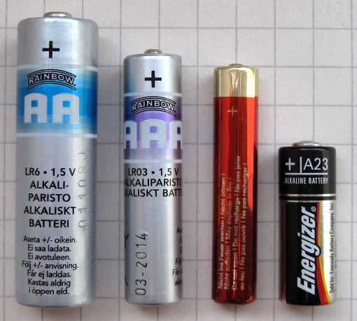
Bateries elèctriques.¶
{kind=link}
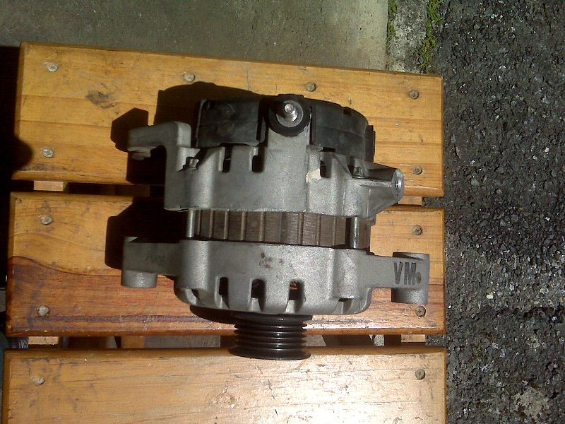
Alternador elèctric d’un cotxe.¶
{kind=link}
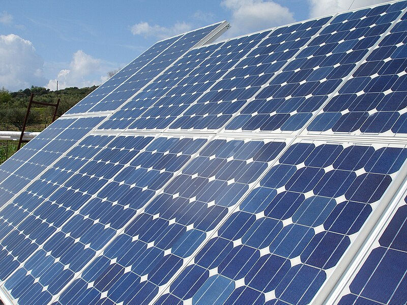
Panell fotovoltaic de generació d’electricitat solar.¶
Conductors¶
Els conductors transporten electricitat entre els components del circuit. Solen ser cables elèctrics.
Els materials més comuns que s’utilitzen per conduir electricitat són:
- Coure:
És el més utilitzat dins dels edificis, als cables flexibles dels dispositius i per a la fabricació de motors elèctrics.
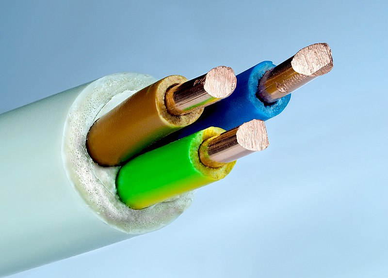
Cable de coure amb 3 fils de secció de 2,5 mm2 cadascun.¶
Petar Milošević <https://commons.wikimedia.org/wiki/file:elèctric_guide_3%C3%972.5_mm.jpg> __, `cc by-sa 4.0 <https://creativecommons.org/licenses/by-sa/4.0/deed.en> `__, via Wikimedia Commons.- Alumini i acer:
Són els materials més utilitzats en cables d’alta tensió. Tenen una bona resistència mecànica, resisteixen bé l’oxidació i són més barats que el coure.
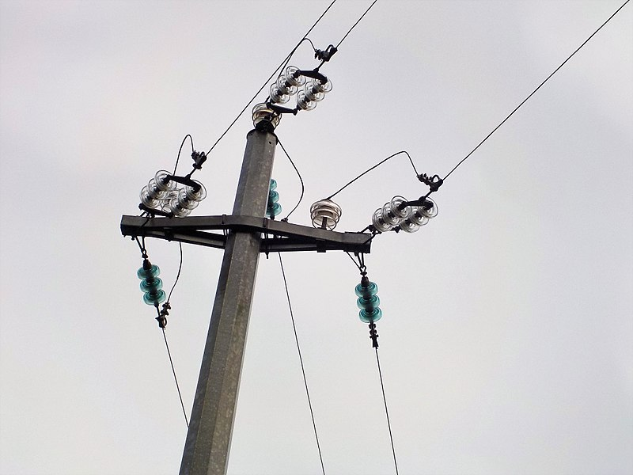
Cable d’alta tensió, alumini i acer.¶
Albarubescens <https://commons.wikimedia.org/wiki/file:hight_voltage_cables_with_glass_insulatores.jpg> __, `cc by-sa 4.0 <https://creativecommons.org/licenses/by-sa/4.0/deed.en> __, __, via via via via a via a via a via Wikimedia Commons.- Or, níquel i crom:
S’utilitzen en el recobriment de contactes elèctrics per evitar l’oxidació i millorar la conducció. Es poden veure als connectors d’àudio i als connectors USB.
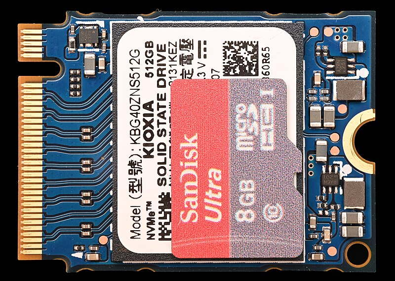
Disc SSD amb connectors banyats d'or.¶
Phiarc <https://commons.wikimedia.org/wiki/file:m.2_2230_m-key_ssd_in_comparison_with_micro-sd_card.jpg> `` `` cc per SA 4.0 <https://creativecommons.org/licenses/by-sa/4.0/deed.en>`__, a través de Wikimedia Commons.- Estany, plom i plata:
A causa de la seva baixa temperatura de fusió (menys de 300 ºC), s'utilitzen en la soldadura de components electrònics. La plata, tot i ser més cara, s’utilitza cada cop més perquè no produeix els efectes tòxics del plom.
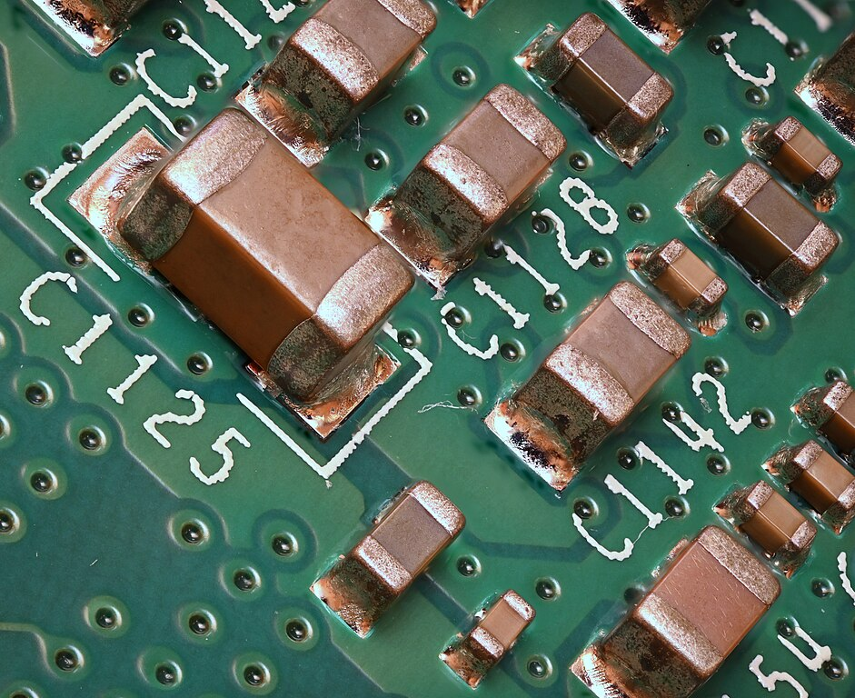
Components SMD units al PCB amb soldadures de llauna.¶
Phiarc <https://commons.wikimedia.org/wiki/file:Many_different_smd_capacitors.jpg> __, cc by-sa 4.0 <https://creatcommons.org/licenses/by-sa/4.0/deed.en> `` `` `` `` `` `` `` `` `` `` `` `` `` `` `` ` Wikimedia Commons.
{kind=link}
{kind=link}
{kind=link}
{kind=link}
Receptors¶
Els components del receptor transformen l’electricitat en efectes útils com la llum, la calor, el moviment, el so, etc.
Alguns exemples de receptors són bulbs, ventiladors, forn de microones, nevera, televisió, etc.
{kind=link}
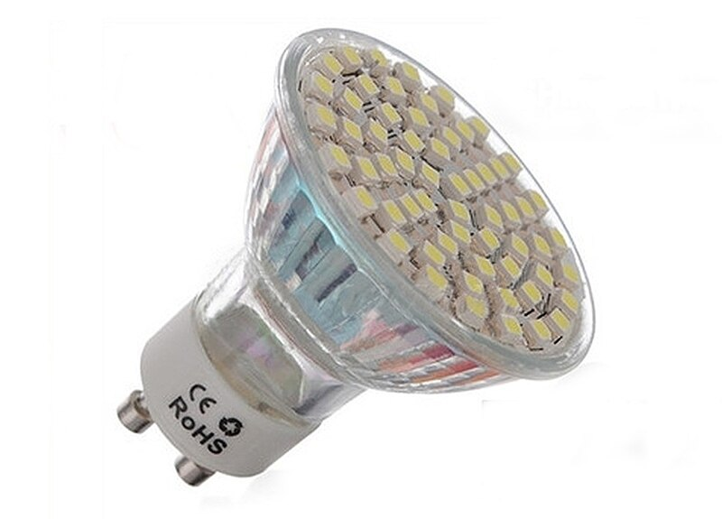
Làmpada LED produeix llum a partir de l’electricitat.¶
{kind=link}
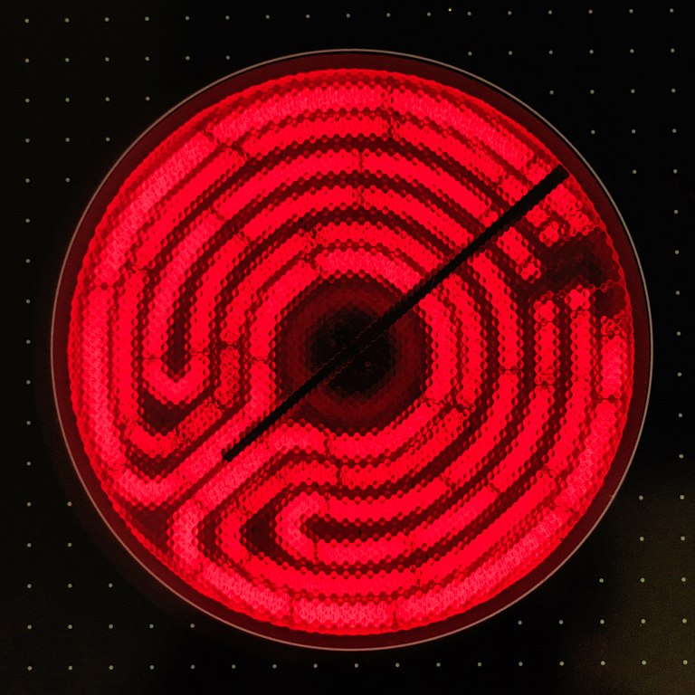
Resistència elèctrica d’un hob, produint calor.¶
Elements de control¶
Aquests elements permeten controlar el pas de l’electricitat segons s’acordi. L’exemple més senzill és un interruptor que s’encén o s’apaga de la llum deixant que l’electricitat passi quan ens convingui.
Segons com hi ha diversos tipus d’elements de control.
- Unitat manual:
Interruptors, botons, controls rotatius, etc. Permeten que les persones controlin els dispositius elèctrics.
Cada element de control manual té la seva aplicació pràctica. Quan es controla una campana, no es pot utilitzar un interruptor perquè després de prémer -la, la campana funcionarà sense aturar -se. En aquesta aplicació utilitzarem un botó millor, que només activa la campana mentre fem clic.
- Protecció elèctrica:
Fusibles, interruptors automàtics, diferencials, etc.
Els fusibles i els interruptors automàtics tallen electricitat per protegir la instal·lació elèctrica i evitar que els cables es cremin si hi ha un curtcircuit o una sobrecàrrega.
El diferencial protegeix la vida nord -americana tallant el corrent abans que una derivació elèctrica ens pugui electrocutar.
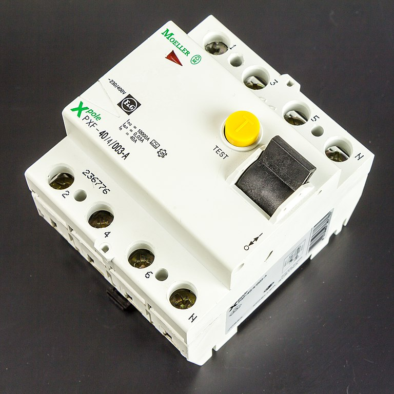
Interruptor diferencial. Protegeix la gent de les descàrregues elèctriques.¶
Raimond Spekking <https://commons.wikimedia.org/wiki/file:moeller_xpole_pxf-40-4-003-A-2289.jpg> __, `cc by-sa 4.0 <https://creativecommons.org/licenses/by-sa/4.0/deed.en> `__, a través de Wikimedia Commons.- Unitat automàtica:
Alguns elements de control s’activen a partir de senyals elèctrics. Això permet el control automàtic, estalviant la intervenció d’una persona.
Exemples de discos automàtics són: la llum d’una escala que surt sola al cap d’un temps, una porta elèctrica que s’obre sola quan detecta una presència, un ascensor que s’atura al pis dret gràcies a un extrem de la cursa, un edifici intel·ligent que controla la temperatura, la humitat, l’obertura de persianes, el reg, etc.
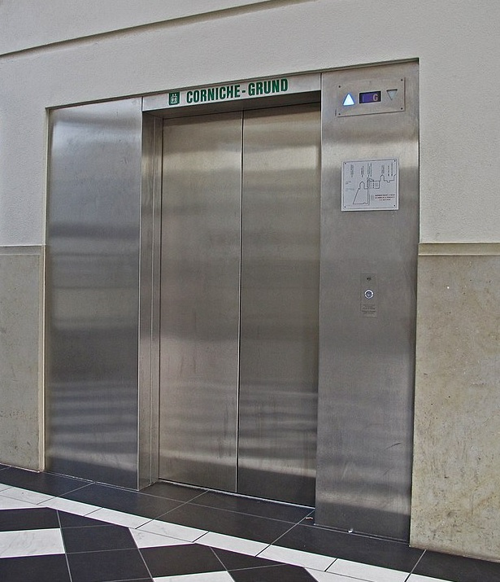
Porta automàtica d’un ascensor.¶
Mmfe, cc by-sa 4.0, via, via, via, via, via, via, via, via, via, via __, via, via __, __, via __, __, __, __, __, _ Wikimedia Commons.
{kind=link}
{kind=link}
{kind=link}